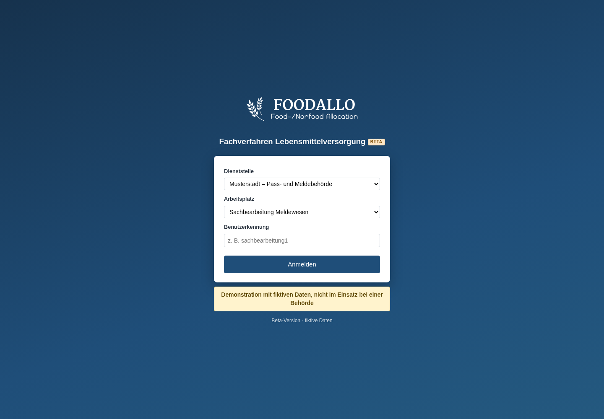
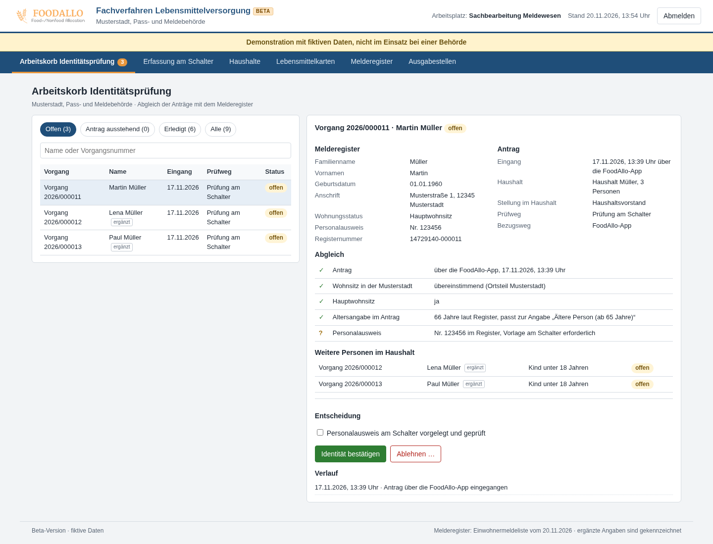
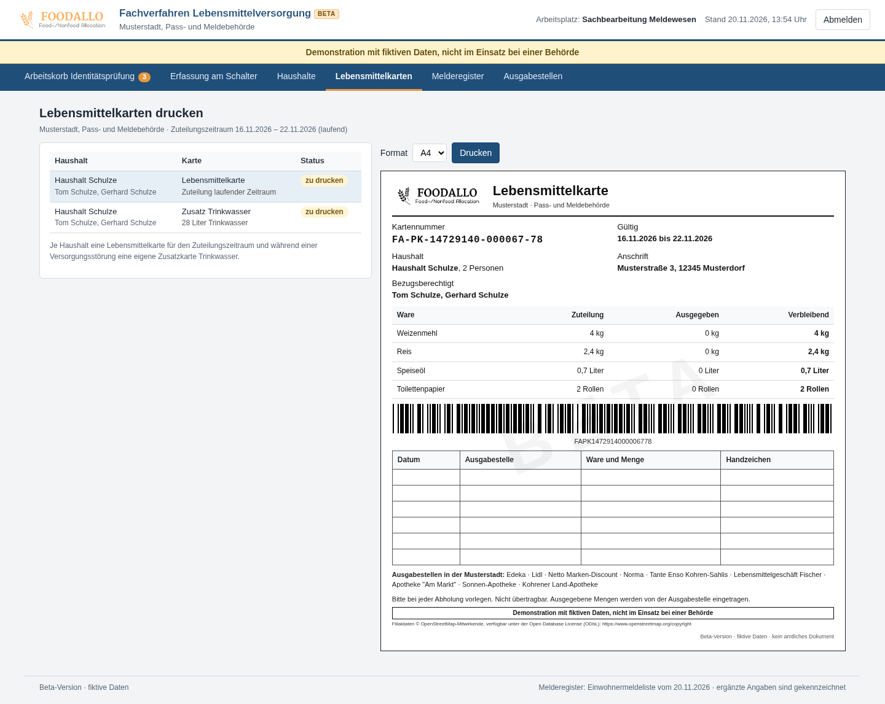
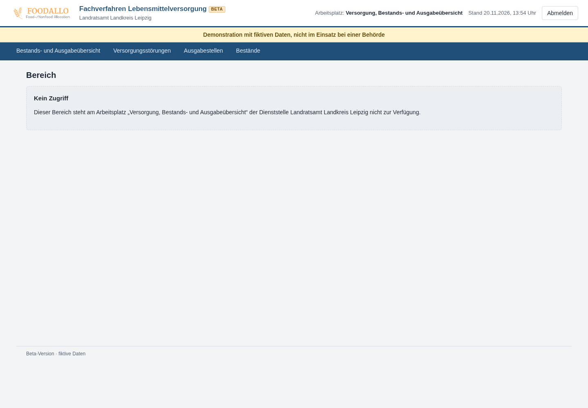
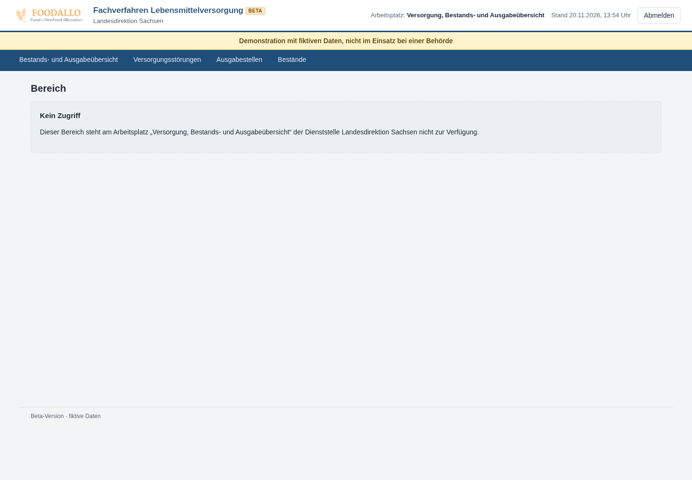

Desktopversion · für Kommune, Kreis, Land und Bund
Bestätigen, Karten drucken, den Überblick behalten.
Die Desktopversion ist das Fachverfahren für die Verwaltung. Die Meldebehörde der Kommune bestätigt Anmeldungen und druckt Papierkarten. Kreis, Land und Bund sehen die Bestands- und Ausgabeübersicht für ihre Ebene – nur als Summen.
Demonstration mit fiktiven Daten, nicht im Einsatz bei einer Behörde
So funktioniert es
- Anmelden – Dienststelle und Arbeitsplatz wählen.
- Identität prüfen – Anträge aus der Customer App mit dem Melderegister abgleichen, bestätigen oder mit Begründung ablehnen.
- Erfassung am Schalter – Menschen ohne Smartphone werden direkt am Schalter aufgenommen.
- Lebensmittelkarten drucken – je Haushalt eine Karte im Format A4 oder A6; bei einer Störung der Wasserversorgung eine eigene Zusatzkarte Trinkwasser.
- Bestands- und Ausgabeübersicht – Ausgaben, Bestand und Reichweite je Artikel, Versorgungsstörungen und Ausgabestellen – ab dem Kreis nur Summen, Zahlen unter 5 werden nicht ausgewiesen.
Beta ausprobieren
Zum Testen: Dienststelle und Arbeitsplatz wählen, ein Passwort ist in der Beta nicht nötig.
Die Beta läuft vollständig im Browser, ohne Server.
Bildschirme aus der Beta





Die GrundregelZugeteilt wird das Kleinste aus Bedarf, Grundquote und Restbestand.